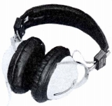
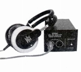
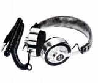
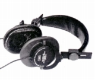
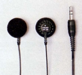
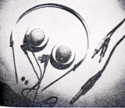
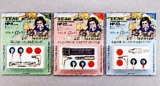
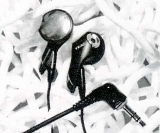
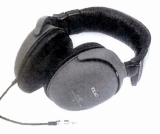
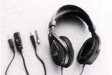

TEAC（ティアック）
1953年設立の東京テレビ音響株式会社と、その姉妹会社、東京電気音響株式会社が1964年に合併してできたオーディオメーカー。高級オーディオ用ブランドで「ESOTERIC
（エソテリック）」、業務用機器のブランドで「TASCAM
（タスカム）」を持っている。なお「TEAC（ティアック）」は会社名東京電気音響の英名の頭文字＝「Tokyo Electro Acoustic
Company」からとったとされている。
オーディオブランドとしては、テープデッキ、特にオープンリールデッキを得意としていた。「ESOTERIC
（エソテリック）」ブランドでの高級ＣＤプレイヤー等にも定評があった。また「タンノイ」の代理店を務めたり、多くのAV用アクセサリーを発売したメーカーでもある。
ヘッドフォンに関しては最近では「ベイヤー」、「コス」の代理店として知られているが、これら海外ブランドの代理店となった1980年代後半より以前から自社ブランドのヘッドフォンを販売していた。海外ブランドの代理店となってからも、サイト公開時は低価格品の販売は続けていたが、一時期（2017年12月時点）では、ヘッドフォン本体からは撤退しているようだが、現時点では「TASCAM」ブランドで販売を再開した模様。なお2018年に「ベイヤー」については、一部製品の代理店を降りた。
TEAC（ティアック）の製品を以下のように分類する。（この分類は個人的な意見で、メーカーの分類ではありません）
�T.1970年代の製品
�@1970年代前半のモデル
HP-101(102) HP-103
(コンデンサー型） HP-201


（左 HP-101 右 HP-201)
�A1970年代後半のモデル
HP90 HP100 (注 この2モデルは、モデル名に「−」が入らない。別にHP-90あり）


(HP-200pro)
�U.1980年代のモデル
1980年代になってから発売したモデルは、低価格のインナーイヤー型が中心となる。第２世代〜第３世代はインナーイヤー型のみ。
�@第1世代
HP-20 HP-30 HP-60 HP-70 HP-80 HP-90


（左 HP-20 右 HP-90)
�A第2世代
HP-11 HP-22 HP-31 HP-33

(HP-11/22/33)

(HP-57)�V.1990年代のモデル
1990年代に入り、一旦は「Stereo Sound YEAR
BOOK」上から消えたが、1997年版より、再び登場する。
HP-L2 HP-L3 HP-L5 HP-DJ1 HP-M5
HP-880i-B
 